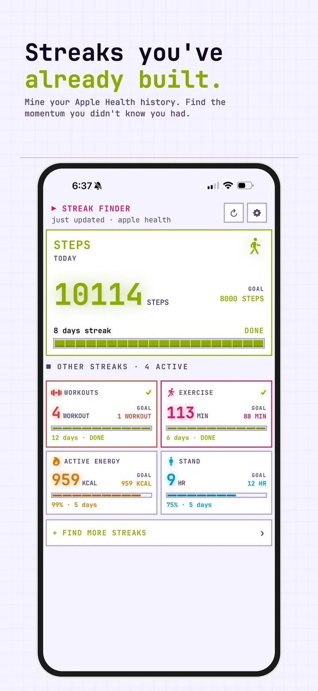
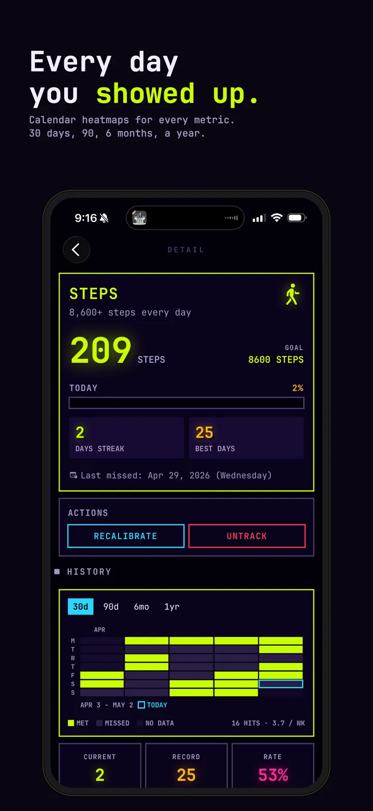
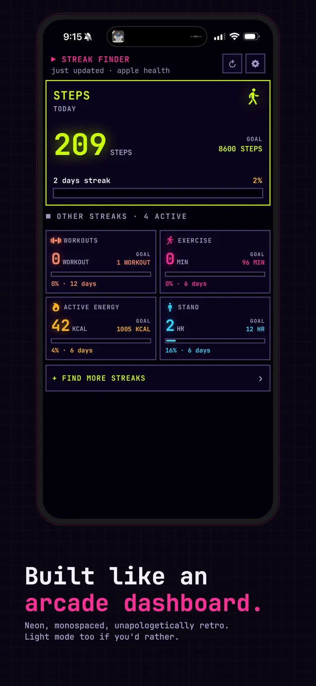
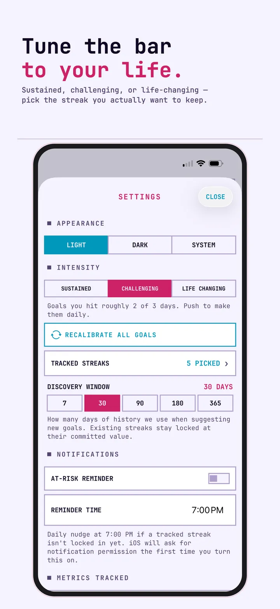
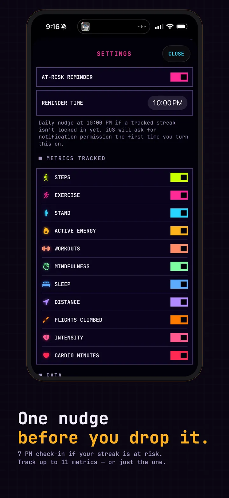

Fitness Habit Tracker is a fitness streak app that finds your workout and activity streaks in Apple Health automatically, all on your device. Free to start, with optional Streaks+.
iPhone · Apple Watch · Widgets
Download for free




Streaks in everything you already track in Apple Health: workouts, steps, exercise, stand and sleep. Free to start. Streaks+ adds Grace Days and at-risk alerts.
Connects to Apple Health and finds the streaks you've already built, with no manual logging.
Steps, exercise, stand hours, active energy, workouts, mindfulness, sleep, distance, flights climbed, and more.
Your single best current run is always front and center, with the rest as tappable badges.
Every streak gets a year-view heatmap of hits and misses, so you can see your patterns at a glance.
Miss a day and Streaks+ automatically saves your streak with a planned freeze.
Included with Streaks+
A heads-up before a streak slips, on top of the free 7pm nudge for your hero streak.
Included with Streaks+
See your streaks at a glance without opening the app, on iPhone and StandBy.
Your streaks on your watch face all day, in circular, rectangular, corner, and inline styles.
Read-only Apple Health access, on-device processing, no account, no ads, no analytics.
Yes. Fitness Habit Tracker: Auto reads from Apple Health in read-only mode and stores everything locally on your device. No accounts, no analytics, no ads, no third-party SDKs, no network requests.
Privacy Policy →How it's built.
Your Health history already holds streaks you've never seen: a 47-day walk streak, a 12-week sleep average above 7 hours, a 3-month daily stand goal.
Fitness Habit Tracker: Auto surfaces them automatically, ranks them by length and difficulty, and warns you before you break the good ones. No manual logging, no signup, no starting from day one.
An optional upgrade for people who don't want a single missed day to end a real streak. Monthly, yearly, or a one-time lifetime purchase is available, with a 7-day free trial on subscriptions. Prices are shown in the app before you buy and vary by region.
Grace Day auto-save. Miss a day and Streaks+ automatically covers it with a planned freeze, so the streak keeps going instead of resetting to zero.
At-risk alerts. A heads-up before a streak slips, layered on top of the free 7pm hero-streak nudge.
Broken-streak revive. Just missed one? Starting a Streaks+ trial can revive a recently broken streak instead of losing the progress for good.
Yes. Fitness Habit Tracker: Auto reads your existing Apple Health history and finds the streaks you have already built across steps, exercise, stand hours, active energy, workouts, mindfulness, sleep, and more, with no manual logging.
Install the app and allow read-only access to Apple Health. It finds your current workout and activity streaks, features the best one as your hero streak, and shows a calendar heatmap of every hit and miss.
Yes. There is a full Apple Watch app plus watch face complications in circular, rectangular, corner, and inline styles, so your streaks stay visible all day.
Yes. A free 7pm nudge reminds you when your hero streak is at risk that day. The optional Streaks+ upgrade adds at-risk notifications and Grace Days that save a streak after a missed day.
No. There is nothing to check off, because streaks come from activity Apple Health already records. You also do not start from day one, since the app looks back through your existing history.
The app is free to start, has no ads, and needs no account. Streaks+ is an optional upgrade, with prices shown in the app before you buy and varying by region.
Yes. The app reads Apple Health in read-only mode and processes your data on your device, with no account, no ads, and no analytics. It is a fitness awareness tool, not medical advice.
| Platform | iOS 17+, watchOS 10+ |
| Language | Swift 6 with strict concurrency |
| Framework | SwiftUI · HealthKit · WidgetKit |
| Data | Read-only HealthKit access, local only |
| Storage | SwiftData cache shared via App Group |
| Widgets | Home Screen, Lock Screen, StandBy, watchOS complications |
The discovery engine. Every metric has multiple threshold tiers. The engine evaluates every (metric, cadence, threshold) combination across 400 days of history, finds contiguous streaks, and ranks by a weighted score of length and difficulty.
One featured streak. Your best current run gets featured. Everything else appears as tappable badges. The hero rotates automatically as streaks break and new ones form. No manual curation.
Calendar heatmaps. Each streak has a year-view heatmap showing every hit and miss, with intensity mapped to how far above threshold you landed that day.
Widget reliability. Widgets never query HealthKit directly. They read a snapshot the main app writes to App Group storage on every refresh, so they stay instant instead of laggy.
Free on the App Store. No account required. Upgrade to Streaks+ anytime.
Download for free